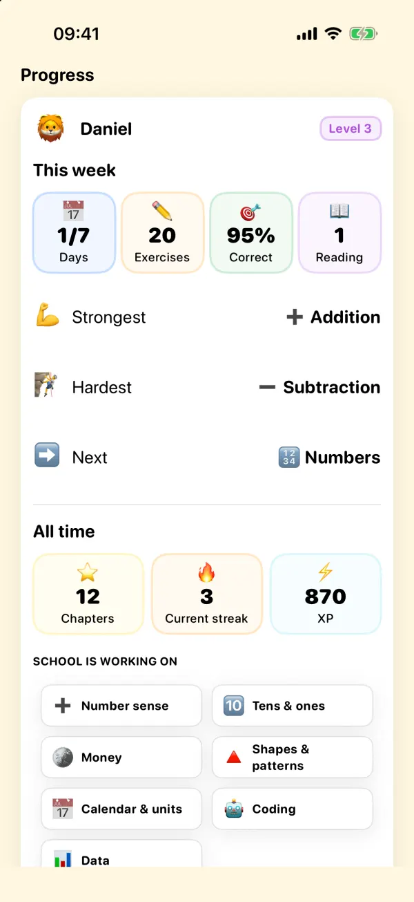

100% private
Geni collects zero data. No accounts, no emails, no tracking. Everything stays on your device. The parent PIN is stored in the iOS Keychain - the most secure storage on iPhone.
Geni collects zero data. No accounts, no emails, no tracking. Everything stays on your device. The parent PIN is stored in the iOS Keychain - the most secure storage on iPhone.

The app works completely offline. No servers, no cloud, no network requests. Your child can learn anywhere - on a plane, in the car, or at the cabin.
Choose which operations your child practices: addition, subtraction, or multiplication. The difficulty adjusts automatically based on performance. Each daily mission has 20 exercises. From age 6, kids also learn to tell time on an analog clock.
Three reading modes help build literacy. The app uses Apple's on-device speech recognition so your child gets feedback as they read aloud. Audio never leaves the device.
Daily missions, coins, XP, levels, badges, streaks, boss challenges, and time attacks. Kids stay engaged because learning feels like a game.
Protected by a 4-digit PIN. From here you can:
Geni supports English, Norwegian, Spanish, and Portuguese. You can switch the app language from the parent dashboard. Perfect for multilingual families.
We'd love to hear from you. Contact us and we'll get back to you as soon as we can.
Geni samler null data. Ingen kontoer, ingen e-poster, ingen sporing. Alt forblir pa enheten din. Foreldre-PIN-en lagres i iOS Keychain - den sikreste lagringen pa iPhone.
Appen fungerer helt offline. Ingen servere, ingen sky, ingen nettverksforsporsler. Barnet ditt kan laere overalt - pa flyet, i bilen eller pa hytta.
Velg hvilke regnearter barnet ditt skal ove pa: addisjon, subtraksjon eller multiplikasjon. Vanskelighetsgraden justeres automatisk basert pa prestasjoner. Hvert daglig oppdrag har 20 oppgaver. Fra 6 år lærer barn også å lese klokka på en analog klokke.
Tre lesemodi hjelper med a bygge leseferdigheter. Appen bruker Apples talegjenkjenning pa enheten, sa barnet ditt far tilbakemelding mens de leser hoyt. Lyd forlater aldri enheten.
Daglige oppdrag, mynter, XP, niva, merker, streaks, boss-utfordringer og tidsangrep. Barn forblir engasjerte fordi laering foler som et spill.
Beskyttet med en 4-sifret PIN. Herfra kan du:
Geni stotter engelsk, norsk, spansk og portugisisk. Du kan bytte appsprak i foreldrepanelet. Perfekt for flerspraklige familier.
Vi hører gjerne fra deg. Kontakt oss så svarer vi så snart vi kan.
Geni recopila cero datos. Sin cuentas, sin correos y sin seguimiento. Todo permanece en tu dispositivo. El PIN de padres se guarda en el llavero de iOS, el almacenamiento más seguro del iPhone.
La app funciona completamente sin conexión. Sin servidores, sin nube y sin solicitudes de red. Tu hijo puede aprender en cualquier lugar: en el avión, en el coche o en la cabaña.
Elige qué operaciones practica tu hijo: suma, resta o multiplicación. La dificultad se ajusta automáticamente según el rendimiento. Cada misión diaria tiene 20 ejercicios. Desde los 6 años, los niños también aprenden a leer la hora en un reloj analógico.
Tres modos de lectura ayudan a desarrollar la alfabetización. La app usa el reconocimiento de voz en el dispositivo de Apple para que tu hijo reciba comentarios mientras lee en voz alta. El audio nunca sale del dispositivo.
Misiones diarias, monedas, XP, niveles, insignias, rachas, desafíos especiales y contrarreloj. Los niños siguen comprometidos porque aprender se siente como un juego.
Protegido con un PIN de 4 dígitos. Desde aquí puedes:
Geni admite inglés, noruego, español y portugués. Puedes cambiar el idioma de la app desde el panel para padres. Ideal para familias multilingües.
Nos encantaría saber de ti. Contáctanos y te responderemos lo antes posible.
Geni coleta zero dados. Sem contas, sem e-mails e sem rastreamento. Tudo fica no seu dispositivo. O PIN dos pais é armazenado no Chaveiro do iOS, o armazenamento mais seguro do iPhone.
O app funciona totalmente offline. Sem servidores, sem nuvem e sem requisições de rede. Seu filho pode aprender em qualquer lugar: no avião, no carro ou na cabana.
Escolha quais operações seu filho vai praticar: adição, subtração ou multiplicação. A dificuldade se ajusta automaticamente com base no desempenho. Cada missão diária tem 20 exercícios. A partir dos 6 anos, as crianças também aprendem a ver as horas em um relógio analógico.
Três modos de leitura ajudam a desenvolver a alfabetização. O app usa o reconhecimento de fala no dispositivo da Apple para que seu filho receba feedback enquanto lê em voz alta. O áudio nunca sai do dispositivo.
Missões diárias, moedas, XP, níveis, insígnias, sequências, desafios especiais e contra o tempo. As crianças continuam envolvidas porque aprender parece um jogo.
Protegido por um PIN de 4 dígitos. A partir daqui você pode:
Geni oferece suporte a inglês, norueguês, espanhol e português. Você pode trocar o idioma do app no painel dos pais. Perfeito para famílias multilíngues.
Adoraríamos ouvir você. Entre em contato e responderemos o mais rápido possível.